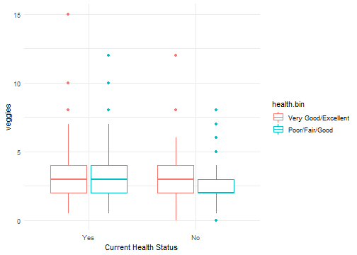

Introduction to Hypothesis Testing
Adam J Sullivan
Assistant Professor of Biostatistics
Brown University
Introduction to Hypothesis Testing
Introduction to Hypothesis Testing
- In most statistics courses you get to hypothesis testing at the end of the course.
- We will do things a little different.
- We should consider important concepts when trying to understand testing hypothesis.
What is hypothesis Testing?
- Many times we want to be able to compare things.
- We wish to test whether something is better than something else.
- Should you buy computer "A" vs computer "B".
- We also wish to test the validity of statements.
- A friend says they can force a coin to get Heads.
- You give them a coin and they flip three times in a row and get heads.
- Do you believe them?
Coin Toss
coin <- c(1, 0)
flips <- replicate(100000, sum(sample(coin, 3, replace=T)))
tab <- table(flips)
prop.table(tab)
## flips
## 0 1 2 3
## 0.12352 0.37410 0.37730 0.12508
Testing Our Friend
- The probability of 3 heads in 3 coin flips is 12.5%
- We may not believe that they can force heads.
- Many times our hypothesis testing is about different groups.
Big Question
- Does eating organic food improve your health?
- Consider some evidence
Data Study 1
- This data comes from NHANES: National Health and Nutrition Examination Survey
- Large national random sample
- 2009 – 2010 data
- n = 3777
Organic Food
"In the past 30 days, did you buy any food that had the word 'organic' on the package?"

Current Health Status
"Would you say your health in general is Excellent, Very Good, Good, Fair or Poor"
Current Health Status

Health by Organic

The Difference
- We could consider the difference between healthy with organic food vs healthy with conventional food.
## # A tibble: 4 x 4
## # Groups: health.bin [2]
## health.bin organic n freq
## <fct> <fct> <int> <dbl>
## 1 Very Good/Excellent Yes 555 0.497
## 2 Very Good/Excellent No 562 0.503
## 3 Poor/Fair/Good Yes 593 0.382
## 4 Poor/Fair/Good No 961 0.618
## [1] 0.127
Evaluating Evidence
- In this data, people who bout organic are healthier.
- Possible Explanations
- Eating organic improves health.
- Groups Differed at Baseline.
Random Chance.
Evaluating Evidence
- In this data, people who bout organic are healthier.
- Possible Explanations
- Eating organic improves health.
- Groups Differed at Baseline.
Random Chance.
- P-value: <0.00000000000002 (Will Explain Later)
People Who Buy Organic Make More Money

People Make More are Healthier

People Make More are Healthier

People Make More are Healthier

Evaluating Evidence
- In this data, people who bout organic are healthier.
- Possible Explanations
- Eating organic improves health.
- Groups Differed at Baseline.
Random Chance.
- We cannot make a decision here with their being more than one option
Causal Claims
- We cannot make causal claims with groups that are not comparable at baseline.
- We can look within similar groups to compare though.
Line Plots by Organic vs Conventional
Evidence Enough?
- Does this satisfy our thoughts?
Health by Smoking
- Poople who buy organic are less likely to smoke
Health by Veggies

Conclusions
- Cannot make comparisons on non-comparable groups.
- What can happen?
- Baseline difference shifts effect.
- Baseline difference reverses effect.
- Baseline difference masks true effect.
- Baseline difference creates false effect.
Still Not Convinced?
- Let's simulate organic based on income only.
- Then organc food choice is only associated with income and not with health directly.
Simulation
Health by Organic Sim
- Difference exists even though we made up organic food purchases.

Simulated Line Plots by Organic vs Conventional

What do we do?
- Ideally We randomize at baseline so that we can make causal claims.
- If not, there are methods to determine causal inference but they are much more difficult.
Data Problem #2: Fruit Flies
- Fruit flies randomly divided into two groups of 500 each
- One group fed organic food, the other conventional food
- Measured longevity, fertility, stress resistance, activity
- Study done by a 16-year-old girl for a science project!
- Organically Grown Food Provides Health Benefits to Drosophila melanogaster
Longevity by Organic Food
- Data simulated to be similar to paper